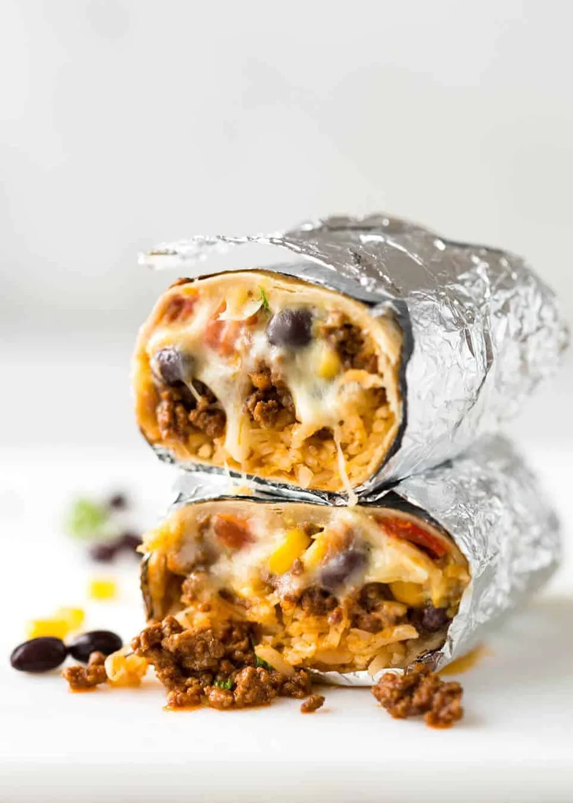

beef burrito

Saucy and savory with just ground beef, beans and cheese, this easy recipe is inspired by Los Angeles-style burritos, which restaurant critic Jonathan Gold once summarized as “the rough equivalent of a hardhat’s lunch pail, a method of constructing a filling, portable meal from a tortilla, last night’s beans and a spoonful of stew if there was one.” This burrito’s filling eschews guacamole, sour cream, rice and raw vegetables which means it freezes well for up to 3 months. The seared ground beef is simply spiced, but feel free to swap in a stewed meat like birria or tinga de pollo or make it vegetarian with just beans and cheese.
ingridients
- 1 pound ground beef
- 1 medium yellow or white onion, finely chopped
- 1 ½teaspoons ground cumin
- ½ teaspoon smoked paprika, or chipotle or ancho chile powder
- ½ teaspoon dried oregano
- 1 (15-ounce) can black or pinto beans
- 1 large tomato, coarsely chopped
- 2 teaspoons lime juice, or apple cider vinegar
- Hot sauce, for drizzling (optional)
- 6 burrito-size (about 10-inch) flour tortillas
- 2 dcups (8 ounces) shredded Monterey Jack or Mexican blend cheese
preparation
- In a large skillet, press the beef into an even layer to fill the skillet. Sprinkle with the onion. Cook over medium-high, undisturbed, until the meat is deeply browned underneath, 6 to 8 minutes.
- Sprinkle with the cumin, smoked paprika and oregano, and season with salt and pepper. Break up the beef into small pieces, then cook, stirring occasionally, until the onion is softened and the spices are fragrant, 2 to 4 minutes.
- Add the beans, including the liquid, and the tomato and simmer, stirring and scraping up browned bits, until the liquid has evaporated and the mixture starts to sizzle, 8 to 10 minutes. Turn off the heat, stir in the lime juice and season with salt and pepper.
- Arrange the tortillas on a clean work surface. Sprinkle half the cheese across the center of the tortillas, left to right, leaving a 1-inch border. Top each with ⅔ cup of the beef-bean mixture, followed by the remaining cheese. Drizzle on hot sauce, if using.
- Fold the tortilla’s short sides over the filling, then fold the bottom of the tortilla snugly over the filling. Tightly roll away from you until the burrito is sealed. Repeat with the other tortillas.
- When ready to eat, in a nonstick skillet over medium, place the burritos seam side down. Cook, turning occasionally, until golden all over, 3 to 5 minutes. Serve with desired toppings.
home